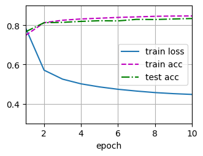

import numpy as np
import torch
from torch.utils import data
def synthetic_data(w, b, num_examples): #@save
"""生成y=Xw+b+噪声"""
X = torch.normal(0, 1, (num_examples, len(w)))
y = torch.matmul(X, w) + b
y += torch.normal(0, 0.01, y.shape)
return X, y.reshape((-1, 1))
true_w = torch.tensor([2, -3.4])
true_b = torch.tensor(4.2)
features, labels = synthetic_data(true_w, true_b, 1000)深度学习入门(day3) - pytorch实现回归模型
线性回归的简洁实现
使用pytroch简洁的实现线性回归模型 ### 生成数据集 首先生成人工数据集
读取数据集
调用torch.utils模块中的DataLoader方法读取数据集，它可以通过设定shuffle自动打乱顺序，同时返回批量为batch_size的可迭代对象。
def load_array(data_array, batch_size, is_train=True):
"""构造一个PyTorch数据迭代器"""
dataset = data.TensorDataset(*data_array) # 传入的data_array是元组(X, y)，要先解包，它能将多个tensor对齐组成数据集。
return data.DataLoader(dataset, batch_size=batch_size, shuffle=is_train)
batch_size = 10
data_iter = load_array((features, labels), batch_size)
next(iter(data_iter))[tensor([[ 1.6399, 1.0388],
[ 1.6064, -1.3936],
[-0.0386, 1.3717],
[ 0.9302, -1.1288],
[ 1.3340, -1.4483],
[-0.2042, -0.9463],
[-0.3373, -2.2008],
[ 1.4953, -0.2453],
[ 0.7445, -0.0620],
[ 0.9325, -0.7204]]),
tensor([[ 3.9289],
[12.1537],
[-0.5295],
[ 9.9016],
[11.7910],
[ 7.0217],
[10.9965],
[ 8.0189],
[ 5.9063],
[ 8.5207]])]定义模型
首先定义一个模型变量net，它是一个Sequential类的实例。当给定输入数据时，它能将数据传入第一层，然后将第一次层的输出作为第二层的输入。。。
from torch import nn
net = nn.Sequential(nn.Linear(2, 1)) # Linear方法接受两个参数，第一个参数指定输入特征的形状，第二个指定输出特征的形状。初始化模型参数
可以通过net[0]来选定第一个层，使用weight.data和bias.data访问参数，它会被初始化成随机值，可以使用normal_和fill_来重写参数。
net[0].weight.data.normal_(0, 0.01)
net[0].bias.data.fill_(0)tensor([0.])定义损失函数
pytorch中的均方损失是MSELoss类，它默认返回所有样本损失的平均值（由reduction指定mean、sum、none）。
loss = nn.MSELoss()定义优化算法
在pytorch的optim模块中有很多梯度下降算法的变种，这里使用SGD，它接收的params参数通过net.parameters()获得
trainer =torch.optim.SGD(net.parameters(), lr=0.03)训练
对于每一个迭代周期里，通过迭代器不停的获取小批量的输入和相应的标签，对每一个小批量数据执行:
通过调用net(X)生成预测并计算损失l（前向传播）。
通过进行反向传播来计算梯度。
通过调用优化器来更新模型参数。
num_epochs = 3
for epoch in range(num_epochs):
for X, y in data_iter:
y_hat = net(X)
l = loss(y_hat, y)
trainer.zero_grad() # 清空梯度
l.backward()
trainer.step() # 执行一步梯度下降，更新参数。
l = loss(net(features), labels) # 观察每一个迭代周期的训练效果
print(f'epoch {epoch+1}, loss {l:f}')
w = net[0].weight.data
print('w的估计误差：', true_w - w.reshape(true_w.shape))
b = net[0].bias.data
print('b的估计误差：', true_b - b)epoch 1, loss 0.000193
epoch 2, loss 0.000097
epoch 3, loss 0.000096
w的估计误差： tensor([ 0.0006, -0.0001])
b的估计误差： tensor([-8.7261e-05])softmax回归的简洁实现
通过深度学习框架的高级API也能更方便地实现softmax回归模型。
import torch
from torch import nn
import torchvision
from torchvision import transforms
%matplotlib inline
%config InlineBackend.figure_format = 'svg' # 在 Jupyter 中设置矢量图显示
def get_dataloader_workers():
return 4
def load_data_fashion_mnist(batch_size, resize=None):
"""下载Fashion-MNIST数据集，然后将其加载到内存中"""
trans = [transforms.ToTensor()]
if resize:
trans.insert(0, transforms.Resize(resize))
trans = transforms.Compose(trans)
mnist_train = torchvision.datasets.FashionMNIST(
root="./data", train=True, transform=trans, download=True)
mnist_test = torchvision.datasets.FashionMNIST(
root="./data", train=False, transform=trans, download=True)
return (data.DataLoader(mnist_train, batch_size, shuffle=True,
num_workers=get_dataloader_workers()),
data.DataLoader(mnist_test, batch_size, shuffle=False,
num_workers=get_dataloader_workers()))
batch_size = 256
train_iter, test_iter = load_data_fashion_mnist(batch_size)初始化模型参数
softmax回归的输出层是一个全连接层。因此，只需在Sequential中添加一个带有10个输出的全连接层。
# PyTorch不会隐式地调整输入的形状。因此，
# 我们在线性层前定义了展平层（flatten），来调整网络输入的形状
# 通常第 0 维是批大小（batch_size），默认跳过，从第 1 维开始展平。
net = nn.Sequential(nn.Flatten(), nn.Linear(784, 10))
def init_weights(m):
if type(m) == nn.Linear:
nn.init.normal_(m.weight, std=0.01)
net.apply(init_weights)Sequential(
(0): Flatten(start_dim=1, end_dim=-1)
(1): Linear(in_features=784, out_features=10, bias=True)
)softmax的实现
对于之前的softmax函数 \hat{y_i}=\frac{e^{o_j}}{\sum_{k}{e^{o_k}}}，如果 o_k 中的一些数值非常大，那么 e^{o_k} 可能会大过数据类型的上限，即上溢。可能会使分母变成inf，导致结果为0、inf或nan的 \hat{y_j}。
解决技巧是：先从所有 o_k 中减去 \max{(o_k)}。
\begin{aligned} \hat{y_i} &= \frac{e^{o_j-\max{(o_k)}}e^{\max{(o_k)}}}{\sum_{k}e^{o_k-\max{(o_k)}}e^{\max{(o_k)}}} \\ &= \frac{e^{o_j-\max{(o_k)}}}{\sum_{k}e^{o_k-\max{(o_k)}}} \end{aligned}
经过以上步骤，可能有一些 o_j - \max{(o_k)} 具有较大的负值。由于精度受限，e^{o_j - \max{(o_k)}} 将会有接近零的值，即下溢。这些值可能会四舍五入为零，使 \hat{y_i} 的值为 -\infty。
将softmax和交叉熵结合在一起，可以避免计算指数函数： \begin{aligned} \log{(\hat{y_i})} &= \log{\left( \frac{e^{o_j-\max{(o_k)}}}{\sum_{k}e^{o_k-\max{(o_k)}}} \right)} \\ &= \log{(e^{(o_j - \max{(o_k)})})} - \log{\left( \sum_{k}e^{o_k-\max{(o_k)}} \right)} \\ &= o_j - \max{(o_k)} - \log{\left( \sum_{k}e^{o_k-\max{(o_k)}} \right)} \end{aligned}
最后在交叉熵损失函数中传递未规范化的预测，并同时计算softmax及其对数
"""自动对模型的原始输出（logits，未归一化的分数）进行 LogSoftmax 处理，无需手动添加 Softmax 层。"""
loss = nn.CrossEntropyLoss(reduction='none') 优化算法
使用学习率为0.1的小批量随机梯度下降作为优化算法。
trainer = torch.optim.SGD(net.parameters(), lr=0.1)训练
先定义绘图工具类
import matplotlib.pyplot as plt
from IPython import display
def accuracy(y_hat, y):
"""计算预测正确的数量"""
if len(y_hat.shape) > 1 and y_hat.shape[1] > 1: # y_hat 为矩阵
y_hat = y_hat.argmax(axis=1)
cmp = y_hat.type(y.dtype) == y
return float(cmp.type(y.dtype).sum())
# 先定义一个累加器工具
class Accumulator:
"""在n个变量上累加"""
def __init__(self, n):
self.data = [0.0] * n # 定义长度为n的列表
def add(self, *args):
self.data = [a + float(b) for a, b in zip(self.data, args)] # 列表与输入值累加
def reset(self):
self.data = [0.0] * len(self.data)
def __getitem__(self, idx):
return self.data[idx] # 重写[]方法
def evaluate_accuracy(net, data_iter):
"""计算在指定数据集上模型的精度"""
if isinstance(net, torch.nn.Module):
net.eval() # 将模型设置为评估模式
metric = Accumulator(2) # 正确预测数、预测总数
with torch.no_grad():
for X, y in data_iter:
metric.add(accuracy(net(X), y), y.numel())
return metric[0] / metric[1]
class Animator:
"""在动画中绘制数据"""
def __init__(self, xlabel=None, ylabel=None, legend=None, xlim=None,
ylim=None, xscale='linear', yscale='linear',
fmts=('-', 'm--', 'g-.', 'r:'), nrows=1, ncols=1,
figsize=(3.5, 2.5)):
# 创建图形和坐标轴
self.fig, self.axes = plt.subplots(nrows, ncols, figsize=figsize)
if nrows * ncols == 1:
self.axes = [self.axes] # 统一为列表格式方便后续操作
# 坐标轴配置函数（原生替代d2l.set_axes）
def config_axes(ax):
ax.set_xlabel(xlabel)
ax.set_ylabel(ylabel)
if xlim: ax.set_xlim(xlim)
if ylim: ax.set_ylim(ylim)
ax.set_xscale(xscale)
ax.set_yscale(yscale)
if legend: ax.legend(legend)
ax.grid()
self.config_axes = lambda: config_axes(self.axes[0]) # 绑定配置函数
# 初始化数据容器
self.X, self.Y, self.fmts = None, None, fmts
def add(self, x, y):
# 处理单值输入（兼容标量输入）
if not hasattr(y, "__len__"):
y = [y]
n = len(y)
# 处理x输入（兼容标量输入）
if not hasattr(x, "__len__"):
x = [x] * n # 所有y序列共享相同x值
# 初始化数据存储列表
if not self.X:
self.X = [[] for _ in range(n)]
if not self.Y:
self.Y = [[] for _ in range(n)]
# 添加数据点
for i, (a, b) in enumerate(zip(x, y)):
if a is not None and b is not None:
self.X[i].append(a)
self.Y[i].append(b)
# 清除当前图形并重绘
self.axes[0].cla()
for x_data, y_data, fmt in zip(self.X, self.Y, self.fmts):
self.axes[0].plot(x_data, y_data, fmt)
# 配置坐标轴
self.config_axes()
# 动态显示图形（需在Jupyter中运行）
display.display(self.fig)
display.clear_output(wait=True)再定义训练函数
def train_epoch(net, train_iter, loss, updater): #@save
"""训练模型一个迭代周期"""
# 将模型设置为训练模式
if isinstance(net, torch.nn.Module):
net.train()
# 训练损失总和、训练准确度总和、样本数
metric = Accumulator(3)
for X, y in train_iter:
# 计算梯度并更新参数
y_hat = net(X)
l = loss(y_hat, y)
if isinstance(updater, torch.optim.Optimizer):
# 使用PyTorch内置的优化器和损失函数
updater.zero_grad()
l.mean().backward()
updater.step()
else:
# 使用定制的优化器和损失函数
l.sum().backward()
updater(X.shape[0])
metric.add(float(l.sum()), accuracy(y_hat, y), y.numel())
# 返回训练损失和训练精度
return metric[0] / metric[2], metric[1] / metric[2]
def train(net, train_iter, test_iter, loss, num_epochs, updater):
"""训练模型"""
animator = Animator(xlabel='epoch', xlim=[1, num_epochs], ylim=[0.3, 0.9],
legend=['train loss', 'train acc', 'test acc'])
for epoch in range(num_epochs):
train_metrics = train_epoch(net, train_iter, loss, updater)
test_acc = evaluate_accuracy(net, test_iter)
animator.add(epoch + 1, train_metrics + (test_acc,))
train_loss, train_acc = train_metrics
assert train_loss < 0.5, train_loss
assert train_acc <= 1 and train_acc > 0.7, train_acc
assert test_acc <= 1 and test_acc > 0.7, test_acc开始训练
num_epoch = 10
train(net, train_iter, test_iter, loss, num_epoch, trainer)
总结
使用深度学习框架的内置API，不仅可以简洁高效的训练模型，还额外采取预防措施避免数值异常。